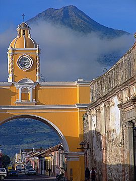

El accidente hidrográfico más importante del departamento de Sololá en Guatemala lo constituye el lago de Atitlán, que es una de las principales fuentes económicas del departamento, pues además de ser un centro turístico de mucho atractivo, sirve de mucho apoyo comercial.En los márgenes del lago se alzan los volcanes de Atitlán (3537 msnm1), Tolimán (3158 msnm) y volcán San Pedro (3020 msnm). El lago está situado a 1560 metros sobre el nivel del mar y tiene 18 km de longitud. Su profundidad, que varía en muchos puntos, es desconocida, sin embargo se han sondeado más de 350 metros de profundidad.
Respecto al origen del lago de Atitlán, hay dos corrientes de opinión. Una de ellas opina que el lago es un viejo cráter muerto y la otra que el surgimiento de los volcanes interrumpió el curso de los tres ríos que vienen del norte, los cuales, al reunir sus aguas en el lugar, dieron origen al lago. El lago no tiene desagüe visible. Además, se dice que donde está el lago hubo una isla que fue el epicentro de la actividad maya en la época Pre-clásica (600 a. C. - 250 d. C.),en un asentamiento llamado Pajaibal, ya que en esa época los mayas se agrupaban en regiones.
El Lago de Atitlán, en el departamento de Sololá, se consolida como uno de los atractivos turísticos más visitados de Guatemala. Sus aguas son de gran pureza, alcanzando niveles del 99% en las partes centrales del lago. Es el lago más profundo de Centro América y se ubica en una caldera volcánica llamada “Los Chocoyos”, que hace aproximados 84,000 años fue formada por una tremenda erupción volcánica. Se han reportado hallazgos de ceniza propia del lugar hasta Ecuador, e irónicamente, un evento tan colosalmente destructivo, dio forma a la sede del lago más bello del mundo. En sus orillas del Lago de Atitlán se cultiva café de gran calidad, formando parte del repertorio de sabores propio de Guatemala.